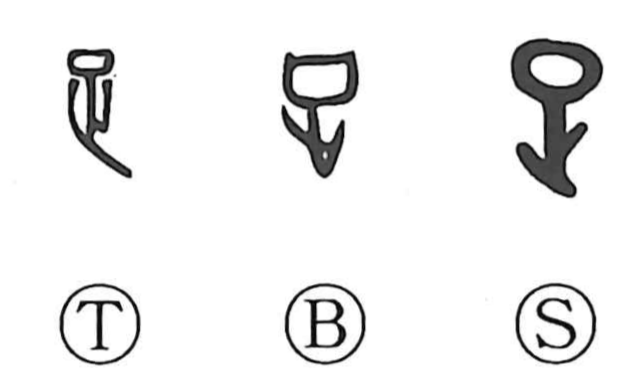

足

Kun: ashi, tariru, taru, tasu | On: soku
foot ・ to be sufficient ・ to add
Explanation
A pictograph: the upper part sketches the lower leg with its knee joint, while the element below—originally the footprint form of 止—shows the foreleg. Rather than depicting the entire limb, the graph isolates the ashi, the foot, by combining the knee with the fore part of the leg. By contrast, 疋 draws the whole lower leg and, by extension, came to be used with the sense of “help,” often interchanged with 胥. From the concrete notion of the foot, 足 broadened to mean “to suffice, be worthy” and “to add, make up,” and it stands very close to 疋 both in form and in associated sounds and meanings.